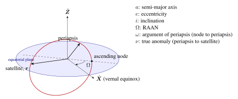
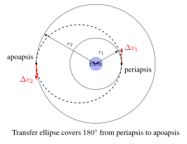
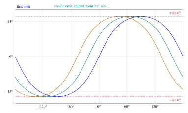

Chapter 2: Orbital Mechanics¶
“The most beautiful thing we can experience is the mysterious. It is the source of all true art and science.”
— Albert Einstein
Orbital mechanics—the application of Newtonian mechanics and calculus to the motion of natural and artificial bodies under gravitational attraction—forms the quantitative foundation of every satellite mission. From the selection of an orbit that meets coverage requirements to the planning of a maneuver sequence to rendezvous with the ISS, from predicting the position of a GPS satellite to the microsecond to designing a constellation that covers the poles, orbital mechanics provides the mathematical framework. This chapter develops the subject from its Newtonian roots through the practical tools used in modern satellite operations (Bate et al. 1971; Vallado 2013; Curtis 2014).
2.1 Newton’s Law of Universal Gravitation¶
2.1.1 Statement and Physical Interpretation¶
In 1687, Newton published his law of universal gravitation, which states that every point mass in the universe attracts every other point mass with a force directed along the line connecting them, with magnitude:
where \(G = 6.674 \times 10^{-11}\) N m\(^2\) kg\(^{-2}\) is the universal gravitational constant, \(M\) is the mass of the attracting body (Earth: \(M_\oplus = 5.972 \times 10^{24}\) kg), \(m\) is the mass of the attracted body (the satellite), \(r\) is the magnitude of the position vector \(\mathbf{r}\) from the center of mass of \(M\) to \(m\), and \(\hat{\mathbf{r}} = \mathbf{r}/r\) is the unit vector from \(M\) toward \(m\). The negative sign indicates attraction (force directed toward \(M\)).
The product \(\mu = GM\) is known as the gravitational parameter of the central body. For Earth: \(\mu_\oplus = GM_\oplus = 3.986004418 \times 10^{14}\) m\(^3\) s\(^{-2}\) (often written as \(398600.4418\) km\(^3\) s\(^{-2}\)). Since \(\mu\) is determined observationally to far higher precision than either \(G\) or \(M\) separately, it is used preferentially in orbital calculations (Vallado 2013).
2.1.2 The Two-Body Problem: Equations of Motion¶
Consider two point masses \(M\) (e.g., Earth) and \(m\) (e.g., a satellite), with position vectors \(\mathbf{R}\) and \(\mathbf{r}_s\) in an inertial frame. The relative position vector of the satellite with respect to Earth’s center is \(\mathbf{r} = \mathbf{r}_s - \mathbf{R}\). Applying Newton’s second law to each body:
Subtracting these equations (dividing by \(m\) and \(M\) respectively) yields the equation of relative motion:
This is the fundamental equation of the two-body problem. It is a vector ordinary differential equation of second order in the relative position vector \(\mathbf{r}\). Its solution completely determines the motion of the satellite relative to Earth’s center, subject to two vector initial conditions (\(\mathbf{r}_0\), \(\dot{\mathbf{r}}_0\)). The equation is nonlinear (the right-hand side depends on \(|\mathbf{r}|^{-3}\)) but possesses analytical solutions in terms of conic sections—a remarkable result first demonstrated by Newton.
Equation (2.3) assumes: (1) both bodies are spherically symmetric point masses; (2) no external forces act (no drag, solar radiation pressure, or third-body gravitation); and (3) the mass of the satellite is negligible compared to Earth (\(m \ll M\)). These assumptions constitute the “restricted two-body problem.” Real satellite motion deviates from this ideal; perturbations are treated in Section 2.8.
2.1.3 Conservation Laws¶
Conservation of Specific Angular Momentum: Taking the cross product of \(\mathbf{r}\) with equation (2.3):
Since \(\mathbf{r} \times \mathbf{r} = \mathbf{0}\), and noting that \(\frac{d}{dt}(\mathbf{r} \times \dot{\mathbf{r}}) = \dot{\mathbf{r}} \times \dot{\mathbf{r}} + \mathbf{r} \times \ddot{\mathbf{r}} = \mathbf{r} \times \ddot{\mathbf{r}}\), we conclude:
The specific angular momentum \(\mathbf{h}\) (angular momentum per unit mass) is conserved. Since \(\mathbf{h}\) is perpendicular to both \(\mathbf{r}\) and \(\dot{\mathbf{r}}\), the orbit lies in a fixed plane containing the center of Earth—the orbital plane.
Conservation of Specific Mechanical Energy: Taking the dot product of \(\dot{\mathbf{r}}\) with equation (2.3):
Recognizing that \(\dot{\mathbf{r}} \cdot \ddot{\mathbf{r}} = \frac{d}{dt}\left(\frac{v^2}{2}\right)\) and \(\mathbf{r} \cdot \dot{\mathbf{r}} = r\dot{r} = \frac{d}{dt}\left(-\frac{\mu}{r}\right) \cdot \frac{r^2}{\mu} \cdot r = r\dot{r}\), integrating yields:
where \(v = |\dot{\mathbf{r}}|\) is the orbital speed, \(a\) is the semi-major axis of the orbit, and \(\mathcal{E}\) is the specific mechanical energy. For a bound (closed) orbit, \(\mathcal{E} < 0\), implying \(a > 0\). For a hyperbolic trajectory, \(\mathcal{E} > 0\).
2.2 Kepler’s Laws of Planetary Motion¶
Johannes Kepler empirically derived his three laws of planetary motion from Tycho Brahe’s observational data (published 1609 and 1619), decades before Newton provided their gravitational explanation.
2.2.1 First Law: The Law of Orbits¶
Kepler’s First Law: The orbit of each planet is an ellipse with the Sun at one focus.
To derive this, one seeks the shape of the trajectory described by the two-body equation (2.3). Taking the cross product of equation (2.3) with \(\mathbf{h}\) and integrating:
where \(\mathbf{e}\) is the eccentricity vector (also called the Laplace–Runge–Lenz vector), a constant of motion pointing toward periapsis. Taking the dot product of equation (2.8) with \(\mathbf{r}\):
where \(e = |\mathbf{e}|\) is the orbital eccentricity, \(\nu\) (or \(f\)) is the true anomaly (angle from periapsis to current position, measured at the focus), and \(p = h^2/\mu\) is the semi-latus rectum. Equation (2.9) is the polar equation of a conic section with the origin at one focus, confirming Kepler’s First Law for the case \(0 \le e < 1\) (ellipse).
2.2.2 Second Law: The Law of Areas¶
Kepler’s Second Law: A line segment joining a planet and the Sun sweeps out equal areas during equal intervals of time.
The areal velocity \(\dot{A}\) is:
Since \(h\) is constant (conservation of angular momentum, equation (2.5)), the areal sweep rate is constant, proving Kepler’s Second Law. This implies the satellite moves fastest at periapsis and slowest at apoapsis.
2.2.3 Third Law: The Law of Periods¶
Kepler’s Third Law: The square of the orbital period is proportional to the cube of the semi-major axis.
The total area of an ellipse is \(A = \pi ab\), where \(b = a\sqrt{1-e^2}\) is the semi-minor axis. Since the areal sweep rate is \(h/2\), the orbital period \(T\) satisfies:
Using \(h = \sqrt{\mu p} = \sqrt{\mu a(1-e^2)}\):
This is the quantitative form of Kepler’s Third Law. For Earth orbit, \(T^2 = (2\pi)^2 a^3 / \mu_\oplus\). For a 500-km altitude circular orbit, \(a = 6878\) km, giving \(T = 2\pi\sqrt{6878^3/398600.4} \approx 5677\) s \(\approx 94.6\) minutes.
2.3 Classical Orbital Elements¶
The state of a satellite in two-body motion is fully specified by six scalar quantities. While the Cartesian state vector (\(\mathbf{r}, \dot{\mathbf{r}}\), six scalars) is convenient for numerical integration, the classical orbital elements (COEs) provide more physical insight and are quasi-constant under perturbations (Bate et al. 1971).
2.3.1 Definitions of the Six Classical Elements¶
-
Semi-major axis \(a\) [km]: Half the longest diameter of the ellipse. Related to orbital energy by \(\mathcal{E} = -\mu/(2a)\). For a circular orbit, \(a = r\).
-
Eccentricity \(e\) [dimensionless]: Shape of the orbit. \(e=0\): circle; \(0<e<1\): ellipse; \(e=1\): parabola (escape); \(e>1\): hyperbola. Periapsis radius: \(r_p = a(1-e)\); Apoapsis radius: \(r_a = a(1+e)\).
-
Inclination \(i\) [deg]: Angle between the orbital plane and the equatorial plane, measured at the ascending node. \(i=0^\circ\): equatorial prograde; \(i=90^\circ\): polar; \(i=180^\circ\): equatorial retrograde.
-
Right Ascension of the Ascending Node \(\Omega\) [deg]: Angle in the equatorial plane from the vernal equinox (\(\boldsymbol{\hat{X}}\), direction of Aries) to the ascending node (where the satellite crosses the equator going northward), measured eastward. Defines the orientation of the orbital plane in inertial space.
-
Argument of Perigee \(\omega\) [deg]: Angle in the orbital plane from the ascending node to the periapsis vector (eccentricity vector \(\mathbf{e}\)), measured in the direction of satellite motion. Defines the orientation of the ellipse within the orbital plane.
-
True Anomaly \(\nu\) (or \(f\)) [deg]: Angle from periapsis to the current satellite position, measured at the focus in the direction of motion. This is the only time-varying element.

2.3.2 Relationships Between Elements¶
The relationships between orbital elements and the orbit geometry are:
| Satellite | Alt (km) | \(a\) (km) | \(e\) | \(i\) (deg) | \(T\) (min) | Application |
|---|---|---|---|---|---|---|
| ISS | 408 | 6786 | 0.001 | 51.6 | 92.7 | Crewed station |
| Starlink Gen1 | 550 | 6928 | \(<0.001\) | 53.0 | 95.9 | Broadband internet |
| GPS Block III | 20,200 | 26,578 | 0.010 | 55.0 | 717.9 | Navigation |
| Galileo | 23,222 | 29,600 | 0.001 | 56.0 | 843.6 | Navigation |
| GEO (typical) | 35,786 | 42,164 | \(<0.001\) | 0.0 | 1436.1 | Communications |
| Molniya | \(\sim\)40,000 apogee | 26,554 | 0.741 | 63.4 | 717 | High-lat comms |
2.4 The Vis-Viva Equation¶
Rearranging the energy equation (2.7) gives the vis-viva equation (Latin: “living force”):
This is one of the most useful equations in orbital mechanics. Given \(\mu\), \(r\), and \(a\), it immediately yields the orbital speed. Special cases:
-
Circular orbit (\(r = a\)): \(v_c = \sqrt{\mu/r}\)
-
Periapsis: \(v_p = \sqrt{\mu(2/r_p - 1/a)}\)
-
Apoapsis: \(v_a = \sqrt{\mu(2/r_a - 1/a)}\)
-
Escape velocity (\(a \to \infty\), i.e., \(\mathcal{E} = 0\)): \(v_{esc} = \sqrt{2\mu/r}\)
For a 400-km altitude circular orbit (ISS), \(r = 6778\) km: \(v_{circ} = \sqrt{398600.4/6778} = 7.669\) km/s. Escape velocity at this radius is \(7.669\sqrt{2} = 10.844\) km/s.
2.5 Orbital Maneuvers¶
2.5.1 The Hohmann Transfer¶
The Hohmann transfer, proposed by Walter Hohmann in 1925, is the most propellant-efficient two-impulse transfer between two coplanar circular orbits in the two-body problem (for a range of orbit ratios). It uses an elliptical transfer orbit tangent to both the initial and final circular orbits.

Derivation: Let the initial orbit have radius \(r_1\) and the final orbit have radius \(r_2 > r_1\). The transfer ellipse has:
Circular orbital velocities:
Speed at periapsis of the transfer ellipse (from vis-viva, \(r = r_1\), \(a = a_t\)):
Speed at apoapsis of the transfer ellipse (\(r = r_2\), \(a = a_t\)):
The two impulsive velocity changes are:
Transfer time (half the period of the transfer ellipse):
Worked Example: Transfer from LEO (500 km altitude, \(r_1 = 6878\) km) to GEO (\(r_2 = 42164\) km):
2.5.2 Bi-Elliptic Transfer¶
For large orbit radius ratios (\(r_2/r_1 > 15.58\)), the bi-elliptic transfer (three impulses via an intermediate high apoapsis) is more propellant-efficient than Hohmann. The total \(\Delta v\) for a bi-elliptic transfer through an intermediate radius \(r_{int}\) is:
The transfer time is longer (up to several days for \(r_{int} \gg r_2\)), making bi-elliptic transfers impractical for time-critical missions despite the propellant savings.
2.5.3 Plane Change Maneuvers¶
A pure plane change rotates the orbital plane by angle \(\Delta i\) without changing the orbit’s shape or size. The required velocity increment is:
where \(v\) is the orbital speed. For a 90\(^\circ\) plane change at LEO (\(v = 7.7\) km/s), \(\Delta v = 2 \times 7.7 \times \sin(45^\circ) = 10.9\) km/s—more than the \(\Delta v\) required to reach LEO from Earth! This explains why satellite orbital inclinations are typically set at launch and maintained thereafter; plane changes in LEO are prohibitively expensive. The combined plane change plus orbit raise maneuver (performed simultaneously at apoapsis of a transfer orbit) is far more efficient.
2.6 Coordinate Systems¶
2.6.1 Earth-Centered Inertial (ECI) Frame¶
The Earth-Centered Inertial (ECI) frame, also known as the Geocentric Equatorial frame, has its origin at Earth’s center of mass. The \(x\)-axis (\(\hat{\mathbf{I}}\)) points toward the vernal equinox (direction from Earth to Sun at the moment of the March equinox); the \(z\)-axis (\(\hat{\mathbf{K}}\)) points toward Earth’s North Celestial Pole; the \(y\)-axis completes the right-handed system. The standard realization is J2000.0 (epoch 1 January 2000, 12:00 TT). The ECI frame does not rotate with Earth, making it inertial (to high accuracy) for satellite orbit computation (Vallado 2013).
2.6.2 Earth-Centered Earth-Fixed (ECEF) Frame¶
The ECEF frame rotates with Earth. Its \(x\)-axis (\(\hat{\mathbf{x}}\)) points toward the intersection of the Greenwich meridian (\(0^\circ\)E longitude) and the equator; the \(z\)-axis points toward the geographic North Pole. ECEF is used for geographic coordinates (latitude, longitude, altitude). The transformation from ECI to ECEF involves Earth’s rotation:
where \(R_3(\theta)\) is a rotation matrix about the \(z\)-axis by angle \(\theta\), and \(\theta_{GAST}\) is the Greenwich Apparent Sidereal Time.
2.6.3 Radial-Along-Track-Cross-Track (RTN) Frame¶
The Radial-Along-Track-Cross-Track (RTN, also RSW) frame is satellite-centered and co-rotates with the satellite. The \(\hat{\mathbf{r}}\) axis points radially outward (from Earth’s center to satellite), \(\hat{\mathbf{t}}\) (or \(\hat{\mathbf{s}}\)) points along-track (in the direction of velocity for circular orbits), and \(\hat{\mathbf{n}}\) (or \(\hat{\mathbf{w}}\)) is normal to the orbital plane (perpendicular to \(\hat{\mathbf{r}}\) and \(\hat{\mathbf{t}}\), completing the right-handed system). The RTN frame is used for formation flying, proximity operations, and maneuver planning.
2.7 Orbit Determination and Propagation¶
2.7.1 Kepler’s Equation¶
Orbital mechanics requires computing the satellite’s position at an arbitrary time given its initial state. This requires solving Kepler’s equation, which relates the mean anomaly \(M\) (which grows linearly with time) to the eccentric anomaly \(E\) (a geometric quantity):
where \(n = 2\pi/T = \sqrt{\mu/a^3}\) is the mean motion and \(t_p\) is the time of periapsis passage. Given \(M\), solving for \(E\) requires iterative methods.
Newton-Raphson Solution: Starting with \(E_0 = M\) (a good initial guess for small \(e\)):
This converges in 3–5 iterations for typical Earth satellite eccentricities. Once \(E\) is known, the true anomaly \(\nu\) and radius \(r\) follow from:
2.7.2 SGP4/SDP4 Model¶
Practical satellite tracking uses the Two-Line Element set (TLE) format, a standardized representation of orbital state maintained by the U.S. Space Force 18th Space Defense Squadron and publicly distributed via the CelesTrak website. TLEs are propagated using the SGP4 (Simplified General Perturbations 4) analytical model for LEO satellites (orbital period \(< 225\) minutes) or SDP4 (for deep-space, high-period objects). SGP4 accounts for atmospheric drag (using a drag coefficient \(B^*\)), secular perturbations due to Earth’s oblateness (\(J_2\), \(J_3\), \(J_4\) terms), and short-period variations.
SGP4 provides position and velocity accurate to approximately 1–3 km for fresh TLEs (age \(< 1\) day), degrading at approximately 1–3 km/day as orbital perturbations accumulate uncorrected. High-fidelity propagation uses numerical integration of the equations of motion with full force models (spherical harmonics, drag, radiation pressure, lunisolar attraction).
2.8 Orbital Perturbations¶
2.8.1 The J₂ Oblateness Effect¶
Earth is not a perfect sphere; its equatorial radius (\(R_{eq} = 6378.137\) km) exceeds its polar radius (\(R_{pol} = 6356.752\) km) by approximately 21 km. This oblateness is captured by the geopotential’s \(J_2\) zonal harmonic coefficient (\(J_2 = 1.08263 \times 10^{-3}\)). The dominant effects of \(J_2\) on orbital elements are secular (linearly growing) rates of change in \(\Omega\) and \(\omega\):
where \(n = \sqrt{\mu/a^3}\) is the mean motion, \(p = a(1-e^2)\) is the semi-latus rectum, and \(R_E = 6378.137\) km is Earth’s equatorial radius.
Equation (2.40) shows that the orbital plane precesses in inertial space. For prograde orbits (\(i < 90^\circ\)), \(\dot{\Omega} < 0\) (westward regression); for retrograde orbits (\(i > 90^\circ\)), \(\dot{\Omega} > 0\) (eastward precession).
2.8.2 Sun-Synchronous Orbits (SSO)¶
A Sun-synchronous orbit (SSO) exploits the \(J_2\)-induced nodal regression. If the precession rate equals Earth’s mean motion around the Sun (\(+0.9856^\circ/\text{day}\) eastward), the orbital plane rotates at the same rate as the Earth-Sun line, maintaining a nearly constant local solar time (LST) at the satellite’s ascending node. This is invaluable for Earth observation because consistent illumination conditions allow systematic comparison of imagery across time.
The SSO condition requires:
Substituting into equation (2.40) and solving for inclination (for a circular orbit, \(p = a\)):
For 500 km altitude, \(a = 6878\) km, \(n = 1.107 \times 10^{-3}\) rad/s: \(i_{SSO} \approx 97.4^\circ\) (slightly retrograde). SSO inclinations range from approximately 96\(^\circ\) to 100\(^\circ\) for altitudes of 200–1000 km.
2.8.3 Frozen Orbits¶
Equation (2.41) shows that \(\dot{\omega} = 0\) when \(\cos^2 i = 1/5\), i.e., \(i = 63.43^\circ\) or \(i = 116.57^\circ\). At these inclinations, the argument of perigee does not rotate, maintaining the periapsis location fixed in the orbital plane. This critical inclination is exploited by the Molniya orbit to keep apogee over high northern latitudes. Additionally, specific combinations of \(e\) and \(\omega\) can produce “frozen orbits” where the eccentricity vector remains stationary, minimizing secular altitude variations at a given latitude—beneficial for repeating-ground-track Earth observation missions.
2.8.4 Atmospheric Drag¶
Below approximately 1000 km altitude, the tenuous upper atmosphere produces a retarding drag force on the satellite:
where \(\rho\) is atmospheric density (highly variable, depending on solar activity), \(C_D\) is the drag coefficient (\(\approx 2.2\) for most satellite shapes), \(A\) is the cross-sectional area normal to velocity, and \(v_{rel}\) is velocity relative to the co-rotating atmosphere. The ballistic coefficient \(\beta = m/(C_D A)\) [kg/m\(^2\)] characterizes a satellite’s susceptibility to drag: high \(\beta\) implies low drag sensitivity.
The secular decrease in semi-major axis due to drag is:
The orbital lifetime before re-entry depends critically on solar activity: during solar maximum, enhanced EUV heating expands the atmosphere, increasing density at a given altitude by up to a factor of 10–100 and drastically reducing orbital lifetimes.
2.8.5 Solar Radiation Pressure¶
Photons carry momentum; a satellite with cross-sectional area \(A\) and reflectivity coefficient \(C_R\) (1 for perfect absorption, 2 for perfect specular reflection) experiences a force:
where \(\Phi = 1361\) W/m\(^2\) is the solar irradiance and \(c\) is the speed of light. For a typical satellite, this acceleration is approximately \(5 \times 10^{-6}\) m/s\(^2\) (much smaller than drag in LEO but dominant at GEO, where atmospheric drag is negligible).
2.9 Special Orbits¶
2.9.1 Molniya Orbit¶
The Molniya orbit (\(a \approx 26554\) km, \(e \approx 0.741\), \(i = 63.43^\circ\), \(\omega = 270^\circ\)) is a 12-hour HEO designed for continuous communications coverage of high-latitude regions (\(> 60^\circ\)N/S). The critical inclination (\(63.43^\circ\)) freezes \(\omega\) at \(270^\circ\), placing apogee over the northern hemisphere. Near apogee (altitude \(\approx 39800\) km), the satellite’s angular velocity matches or exceeds Earth’s rotation, providing 8–10 hours of quasi-stationary coverage per orbit. Two or three Molniya satellites in appropriately phased orbits provide continuous high-latitude coverage.
2.9.2 Tundra Orbit¶
The Tundra orbit is a 24-hour geosynchronous HEO (\(a = 42164\) km, \(e \approx 0.27\), \(i = 63.43^\circ\)). Because its period equals one sidereal day, the ground track repeats daily, and the apogee (altitude \(\approx 47200\) km) dwells over the same region each day for approximately 12 hours. A single Tundra satellite, or a system of three phased satellites, can serve high-latitude users with a single constellation.
2.9.3 Lagrange Points¶
In the circular restricted three-body problem (Sun–Earth–satellite), five equilibrium points exist where the gravitational attractions of the two massive bodies and the centrifugal force in the rotating frame balance. These are the Lagrange points \(L_1\)–\(L_5\):
-
\(L_1\): Between Sun and Earth, approximately 1.5 million km from Earth (sunward). Used by SOHO, ACE, DSCOVR for solar monitoring.
-
\(L_2\): On the anti-Sun side of Earth, approximately 1.5 million km. Used by Herschel, Planck, JWST for cold deep-space observations.
-
\(L_3\): On the opposite side of the Sun from Earth (180\(^\circ\) away).
-
\(L_4\), \(L_5\): At the third corners of equilateral triangles formed with the two primary bodies; stable equilibrium points (Trojan asteroids).
Spacecraft at \(L_1\) and \(L_2\) operate in halo orbits around these unstable equilibria, maintained by small station-keeping maneuvers. The Sun–Earth \(L_2\) point is particularly valuable as it provides a stable thermal and observational environment for astronomical satellites.
2.10 Ground Track Analysis and Coverage¶
2.10.1 Ground Track Equations¶
The satellite’s sub-satellite point (SSP) traces a ground track on Earth’s surface. The latitude of the SSP oscillates between \(-i\) and \(+i\) (the orbital inclination). In the ECEF frame, the longitude of the SSP is:
where \(\omega_E = 7.2921 \times 10^{-5}\) rad/s is Earth’s rotation rate and \(\Delta\lambda(\nu)\) is the longitude change from the ascending node to the current true anomaly. For a circular orbit, the ground track repeats after an integer number of orbits \(m\) in an integer number of days \(d\) if \(n/\omega_E = m/d\) (resonance condition).

2.10.2 Coverage and Access Time¶
The instantaneous ground coverage area of a satellite at altitude \(h\) with elevation mask \(\varepsilon_{min}\) (minimum elevation angle above the horizon) is:
where \(\lambda_{max}\) is the Earth central angle of the coverage cap. For \(\varepsilon_{min} = 5^\circ\) and \(h = 500\) km: \(\lambda_{max} \approx 17.5^\circ\), corresponding to a coverage area of approximately \(11.9 \times 10^6\) km\(^2\) (2.3% of Earth’s surface).
For a constellation of \(N\) satellites in \(P\) orbital planes, providing global coverage requires approximately:
Additional considerations include revisit time (the interval between successive accesses of a given ground target), which decreases with increasing constellation size.
2.11 Relative Motion: Clohessy–Wiltshire Equations¶
For spacecraft operating in close proximity (formation flying, rendezvous), the linearized equations of relative motion in the RTN frame of a circular reference orbit (mean motion \(n\)) are the Clohessy–Wiltshire (CW) equations (Clohessy and Wiltshire 1960):
where \((x, y, z)\) are the relative position coordinates (radial, along-track, cross-track) and \((f_x, f_y, f_z)\) are differential accelerations (control inputs). The homogeneous solution (no thrust) gives the natural relative motion:
where \(\Phi(t)\) is the \(6\times6\) state transition matrix (STM) with known analytical form. The CW equations reveal that in-plane relative motion follows elliptical drift trajectories (aspect ratio 2:1 in \(y\):\(x\)), while out-of-plane motion is simple harmonic with frequency \(n\).
2.12 Lambert’s Problem¶
Lambert’s problem—the boundary value problem of orbital mechanics—seeks the orbit connecting two position vectors \(\mathbf{r}_1\) and \(\mathbf{r}_2\) in a specified time of flight \(\Delta t\). It is fundamental to:
-
Orbit determination from two position fixes
-
Mission planning (targeting orbits)
-
Interplanetary trajectory design
Lambert’s theorem states that the time of flight depends only on \(r_1 = |\mathbf{r}_1|\), \(r_2 = |\mathbf{r}_2|\), and the chord length \(c = |\mathbf{r}_2 - \mathbf{r}_1|\):
where \(\alpha\) and \(\beta\) are auxiliary angles related to \(s = (r_1 + r_2 + c)/2\) (semi-perimeter) and \(a\) (unknown semi-major axis). Standard numerical methods (Izzo, Gooding, Battin) solve this iteratively for \(a\) given \(\Delta t\) (Izzo 2015).
2.13 Summary¶
Key Equations of Orbital Mechanics:
Problems¶
-
Verify Kepler’s Third Law for GPS satellites: given \(a = 26578\) km and \(\mu_\oplus = 398600.4\) km\(^3\)/s\(^2\), compute the orbital period and compare with the stated 12-hour period.
-
A satellite in a 400\(\times\)800 km elliptical orbit has \(e = 0.0295\), \(a = 6978\) km. Using vis-viva, compute the speed at periapsis and apoapsis. Verify with \(v_p r_p = v_a r_a\) (angular momentum conservation).
-
Design a Hohmann transfer from the ISS orbit (408 km) to a 700 km circular orbit. Compute \(\Delta v_1\), \(\Delta v_2\), total \(\Delta v\), and transfer time.
-
For a 500 km SSO, compute the required inclination using equation (2.43). What happens to the inclination as altitude increases?
-
Solve Kepler’s equation \(M = E - 0.3\sin E\) for \(M = 1.0\) rad using Newton-Raphson, starting from \(E_0 = M\). Show the convergence to 6 decimal places.
-
Using the CW equations with \(n = 1.13 \times 10^{-3}\) rad/s, determine the required initial velocity components for a passive safety ellipse (drift-free in-plane relative motion) with \(x_{max} = 100\) m.